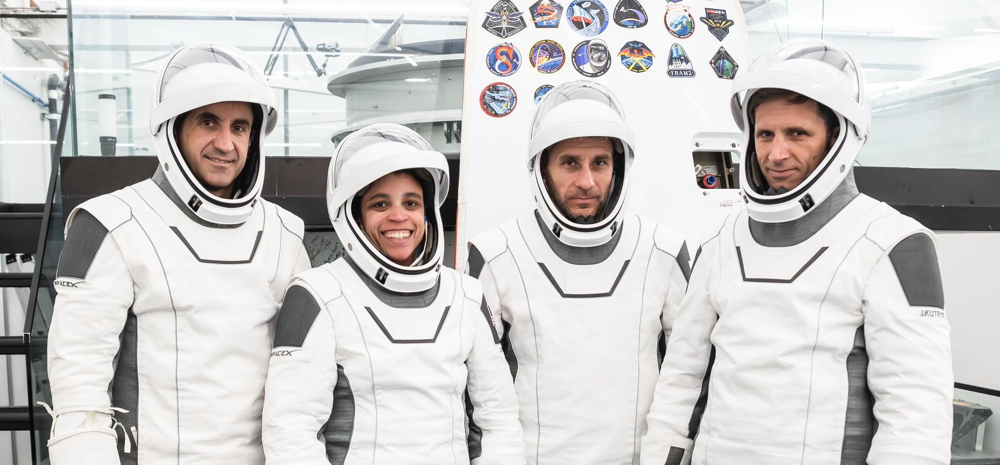
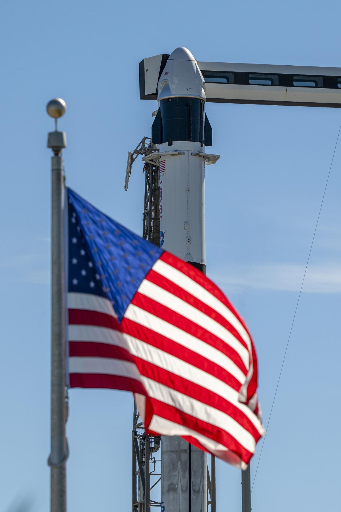

La tredicesima rotazione operativa di SpaceX per la NASA è anche una missione piena di prime volte. Tre membri dell’equipaggio debuttano nello spazio, il Canada entra per la prima volta nel Commercial Crew Program e la NASA punta al trasferimento più rapido mai compiuto da una navetta statunitense verso la Stazione Spaziale Internazionale.
Quando parte e come seguirla
Il decollo è fissato per giovedì 1 ottobre alle 17:10:06 in Italia, le 11:10:06 EDT in Florida. Falcon 9 partirà dallo Space Launch Complex 40 di Cape Canaveral Space Force Station. La finestra è istantanea perché Dragon deve inserirsi nel piano orbitale giusto per inseguire la ISS: non c’è margine per attendere diversi minuti al pad. Se meteo o sistemi impongono uno stop, SpaceX indica una possibilità di riserva venerdì 2 ottobre alle 16:47 italiane.
La copertura NASA comincia alle 15:20 CEST, mentre la diretta SpaceX dovrebbe aprirsi circa un’ora prima del T‑0. NASASpaceflight offre una terza regia, non ufficiale, con commento tecnico e immagini da terra. I collegamenti sono qui sotto e portano direttamente alle pagine già predisposte per la missione.
Pagina ufficiale della missione e webcast.
Countdown, lancio, rendezvous e docking.
Copertura indipendente con commento tecnico.
Chi parte con Crew‑13
Jessica Watkins
Geologa planetaria e veterana di Crew‑4, ha già trascorso 170 giorni nello spazio. Ha studiato la superficie di Marte e lavorato con il team scientifico del rover Curiosity. Sarà la prima astronauta NASA a partire due volte su una Dragon.
Luke Delaney
Al primo volo spaziale. Ingegnere meccanico e aerospaziale, aviatore e pilota collaudatore, ha lavorato anche come research pilot al Langley Research Center della NASA su missioni scientifiche aviotrasportate.
Joshua Kutryk
Colonnello della Royal Canadian Air Force, ingegnere, pilota di CF‑18 e collaudatore con oltre 4.000 ore su più di 40 tipi di aereo. È il primo astronauta canadese assegnato a una missione NASA Commercial Crew.
Sergey Teteryatnikov
Anche per lui è il debutto. Ingegnere navale specializzato negli impianti di propulsione, ha lavorato su unità subacquee ed è entrato nel corpo cosmonauti nel 2021; dal 2023 è cosmonauta collaudatore.

Dragon Grace, Falcon 9 e il profilo di volo
L’equipaggio viaggerà sulla Dragon Grace, già usata nell’estate 2025 per Axiom Mission 4. È quindi il secondo volo della capsula, ma il primo soggiorno di lunga durata collegata alla Stazione. Anche il primo stadio del Falcon 9 è riutilizzato: questa sarà la sua terza missione dopo Crew‑12 e un lancio Starlink. Circa sette minuti e quaranta secondi dopo il decollo il booster dovrebbe rientrare sulla terraferma, a Landing Zone 40, mentre il secondo stadio completerà l’inserzione orbitale della Dragon.
Dopo la separazione, Grace aprirà il cono anteriore e inizierà una sequenza di accensioni per alzare progressivamente l’orbita. Il docking automatico è previsto attorno alle 01:00 CEST del 2 ottobre al portello anteriore del modulo Harmony. Il viaggio pianificato dura sette ore e cinquanta minuti: sarebbe il trasferimento più rapido verso la ISS mai effettuato da un veicolo statunitense. L’equipaggio può intervenire manualmente, ma rendezvous e aggancio sono progettati per essere gestiti in autonomia dalla capsula.

Perché questa rotazione conta
Una volta a bordo, i quattro entreranno nell’Expedition 75 e svolgeranno ricerca, manutenzione e dimostrazioni tecnologiche per circa sei mesi. Il programma comprende tessuti derivati da cellule staminali per studiare malattie cardiache e Parkinson, coltivazione di piante per missioni più lunghe, anomalie del flusso sanguigno in microgravità e nuovi strumenti diagnostici per controllare la salute degli astronauti. È scienza pensata insieme per l’esplorazione della Luna e di Marte e per applicazioni mediche sulla Terra.
Crew‑13 avrà un breve periodo di passaggio di consegne con Crew‑12, che dovrebbe iniziare il rientro non prima del 5 ottobre. La missione arriva dopo un rinvio: a fine agosto era stata rilevata una perdita di ossidante nel sistema propulsivo della Dragon. NASA e SpaceX hanno completato test, lavorazioni e revisioni; il 30 settembre il Launch Readiness Review ha dato il “go”. Resta il meteo, indicato al 55% favorevole, con nubi cumuliformi e precipitazioni come principali vincoli.
Il dato essenziale è che dietro una partenza diventata quasi regolare c’è una catena internazionale di responsabilità. Watkins porta esperienza orbitale e competenza scientifica; Delaney, Kutryk e Teteryatnikov aggiungono profili da collaudo, aviazione e ingegneria navale. SpaceX fornisce razzo e capsula, la NASA governa la missione, Canada e Russia partecipano alla rotazione. Alle 17:10 italiane quella collaborazione avrà un unico secondo per trasformare mesi di preparazione in un viaggio verso la Stazione.
I momenti decisivi del countdown
Negli ultimi 45 minuti la sequenza diventa quasi interamente automatizzata. Il direttore di lancio autorizza il caricamento dei propellenti; il braccio di accesso dell’equipaggio si ritrae, il sistema di fuga della Dragon viene armato e nei due stadi iniziano a entrare cherosene RP‑1 e ossigeno liquido. A T‑7 minuti parte il raffreddamento dei nove Merlin, necessario prima dell’accensione. A un minuto i computer avviano i controlli finali e pressurizzano i serbatoi; a T‑3 secondi viene comandata l’accensione, ma il razzo resta trattenuto finché i sistemi non verificano che tutti i motori abbiano raggiunto le condizioni richieste.
È proprio per questo che “finestra istantanea” non significa lancio a ogni costo. Un allarme può fermare la sequenza fino all’ultimo istante. Con persone a bordo, inoltre, meteo e sicurezza vengono valutati lungo tutto il corridoio di ascesa e nelle aree dove Dragon potrebbe ammarare in caso di aborto. Se uno di questi vincoli non è soddisfatto, la scelta corretta è attendere l’opportunità successiva.
Fonti e immagini
- SpaceX, pagina ufficiale Crew‑13: T‑0, opportunità di riserva, veicoli e profilo di volo.
- NASA, programma della copertura: lancio, docking, apertura del portello e orari delle dirette.
- NASA, guida alla missione: equipaggio, obiettivi scientifici, Dragon Grace ed Expedition 75.
- NASA Crew‑13 blog: stato di prontezza e previsione meteo.
- Canadian Space Agency: ruolo e primati di Joshua Kutryk.
Le immagini sono fotografie ufficiali NASA o SpaceX, scaricate dalle pagine istituzionali citate e conservate localmente per la pubblicazione del dossier.